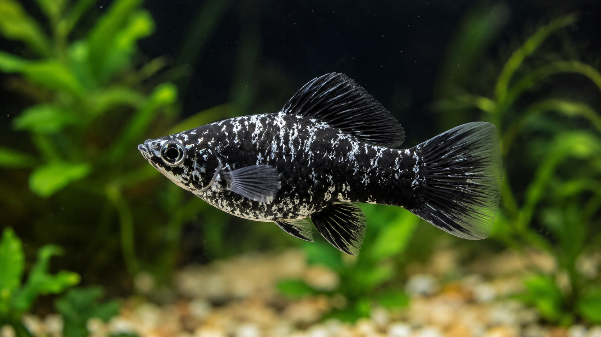
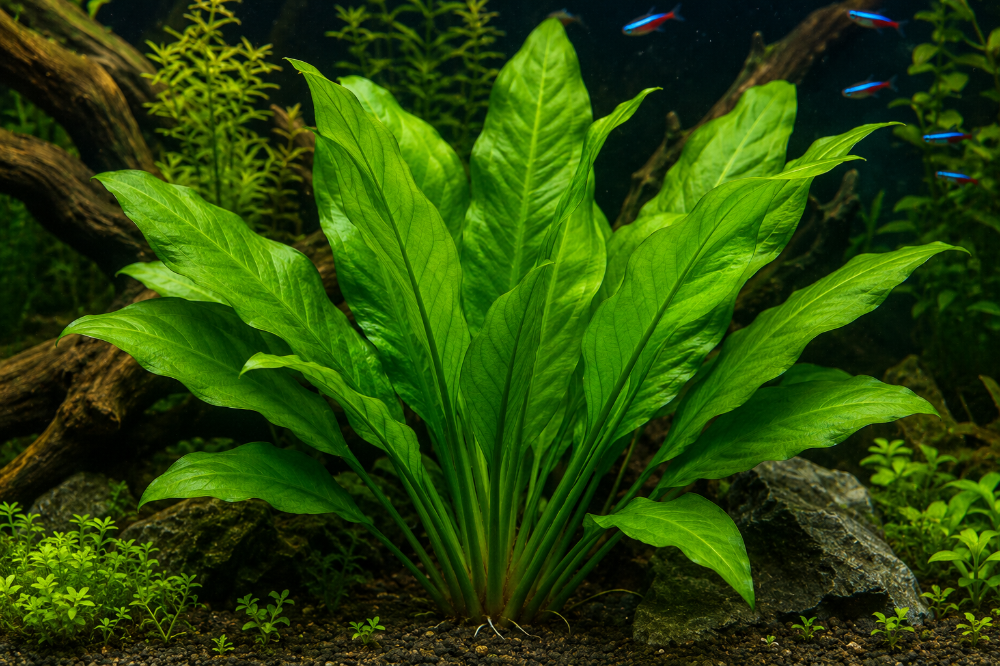
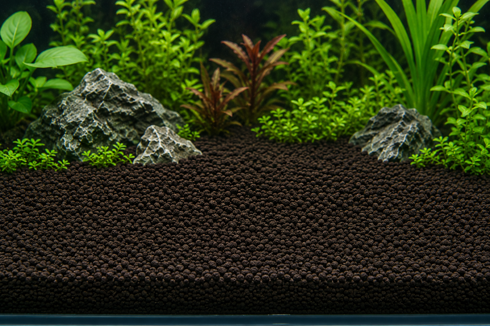
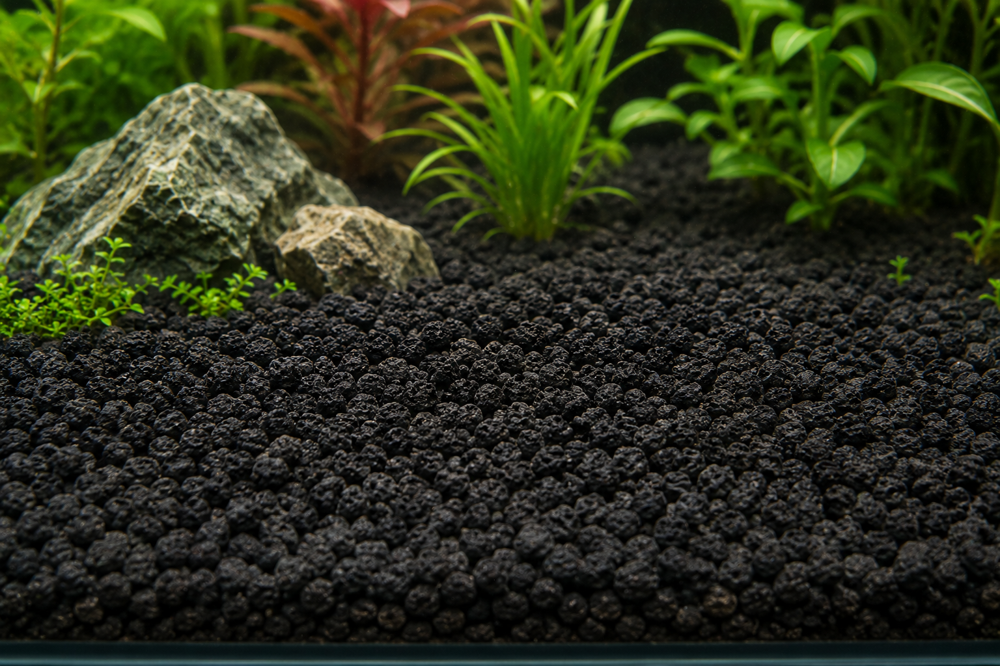
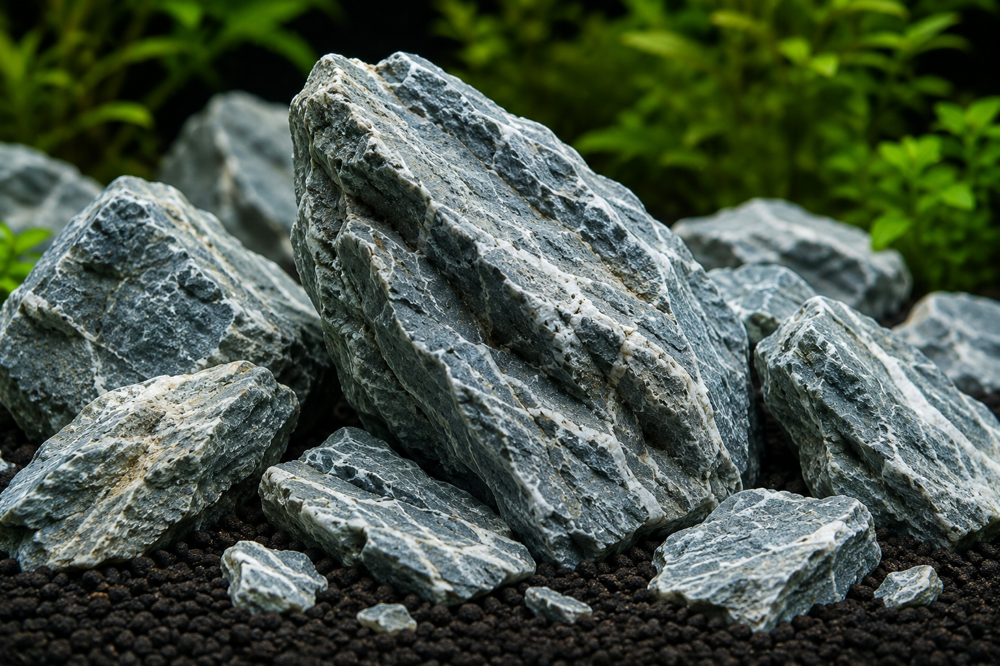
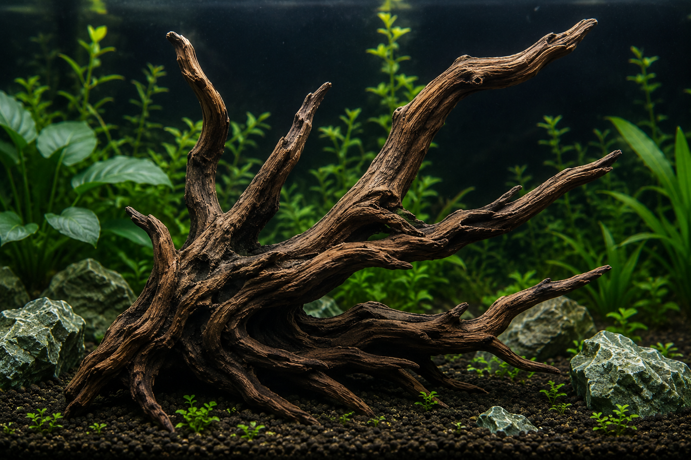

Perpustakaan Aquascape
Temukan informasi dan karakteristik komponen terbaik untuk ekosistem air Anda.
Temukan informasi dan karakteristik komponen terbaik untuk ekosistem air Anda.

Ikan hias air tawar berukuran kecil yang sangat populer karena sirip ekornya yang lebar dan berwarna-warni. Ikan ini sangat tangguh, mudah beradaptasi, serta cepat berkembang biak.
Lihat Detail
Ikan hias kecil yang sangat bersahabat dan aktif berenang. Terkenal sebagai ikan pembersih alami karena gemar memakan alga rambut halus serta lapisan minyak di permukaan air.
Lihat Detail
Tanaman air berbentuk semak dengan daun lebar menyerupai pedang berwarna hijau segar. Sangat cocok ditempatkan sebagai titik fokus di bagian belakang tangki.
Lihat Detail
Substrat tanah liat olahan yang kaya akan nutrisi makro dan mikro. Memiliki kemampuan menstabilkan parameter air pada pH ideal untuk pertumbuhan akar tanaman karpet.
Lihat Detail
Substrat vulkanik berpori kasar alami yang diperoleh dari daerah Malang. Sangat baik untuk sirkulasi air di dasar tangki guna mencegah pembusukan akar tanaman.
Lihat Detail
Batu alam legendaris asal Jepang bersudut tajam dramatis dan dipenuhi retakan putih kalsit yang indah. Memberikan estetika tebing terjal alami yang sangat khas.
Lihat Detail
Batang akar pohon alami berstruktur cabang halus berliku-liku eksotis. Sangat ideal untuk menciptakan struktur kanopi pepohonan bawah air atau menopang tanaman epifit.
Lihat Detail